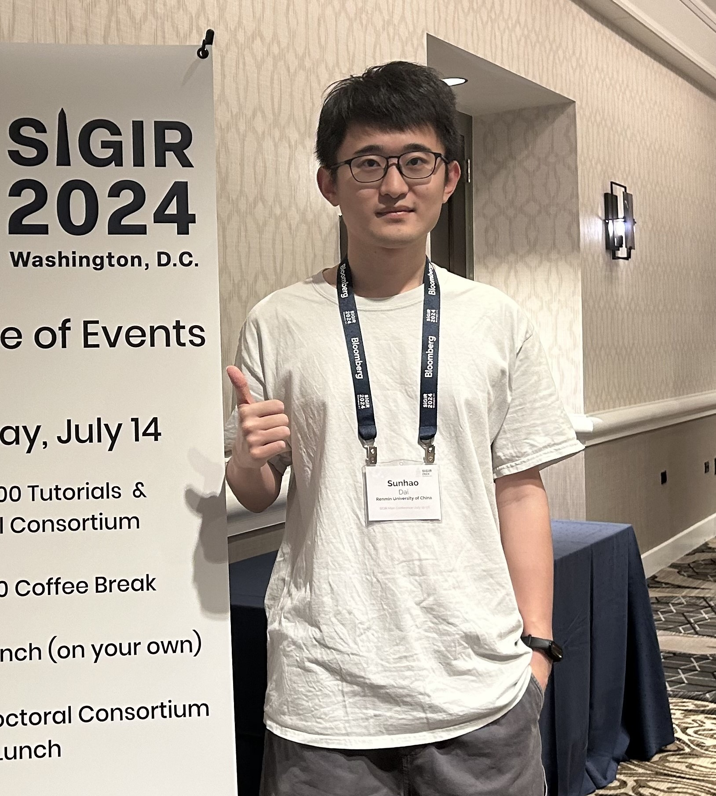

News
|
 |
Sunhao Dai (戴孙浩)
Ph.D. Student
IIR Lab
Renmin University of China, No. 59 Zhongguancun Street, Haidian District, Beijing, China, 100872
Email: sunhaodai [at] ruc.edu.cn
|
I am a fifth-year Ph.D. student at Intelligent Information Retrieval Lab (IIR Lab) from the Gaoling School of Artificial Intelligence (GSAI), Renmin University of China (RUC), supervised by Prof. Jun Xu.
I was also a visiting Ph.D. student at NExT++ Research Centre,
National University of Singapore (NUS), co-advised by Prof. Tat-Seng Chua and Prof. See-Kiong Ng.
I feel grateful to collaborate closely with Prof. Wenjie Wang and Prof. Liang Pang.
My research interests include Information Retrieval, Recommender System, and Agent. My long-term goal is to build a more intelligent and trustworthy information access system. Currently, my primary focuses are on the following topics:
- LLM Agent: Deep Research Agent, GUI Agent, Tool Using, Agentic RL, Synthetic Data;
- LLM for IR: Expilicit/Latent Reasoning for Recommendation, Agentic Recommendation;
- Trustworthy IR: Source bias and other issues in IR ecosystems caused by LLM-generated content.
PS: I am currently on the job market and actively seeking academic or industry opportunities.
I am now especially excited about building a data flywheel for agents, including both the agents themselves and the upstream/downstream ecosystem (e.g., tools and skills). Welcome to check out our new paper on learning retrievers directly from agent trajectories: PDF.
Education
|
Renmin University of China (RUC) Ph.D. Student in Artificial Intelligence, 2021 – Present, Beijing, China Advisor: Prof. Jun Xu |
|
Beijing Jiaotong University (BJTU) B.Eng. in Computer Science and Technology, 2017 – 2021, Beijing, China Advisor: Prof. Jitao Sang |
Experiences
|
NExT++ Research Centre,
National University of Singapore (NUS) Visiting Ph.D. Student, Oct 2024 – Sep 2025, Singapore Advisors: Prof. Tat-Seng Chua and Prof. See-Kiong Ng Mentor: Prof. Wenjie Wang |
Selected Honors
|
ByteDance Scholarship (20 Students in China and Singapore), 2025 |
|
Global Top 20 of Baidu Scholarship, 2024 |
|
National Scholarship (博士生国家奖学金), 2024, 2025 - Ministry of Education of the People's Republic of China (Two consecutive years) |
|
KDD 2024 Student Travel Award, 2024 |
|
Best Short Paper Nominee at SIGIR 2024, 2024 |
|
Outstanding Reviewer, NeurIPS 2022 Dataset & Benchmark Track, 2022 |
|
Outstanding Graduation Thesis of Beijing (北京市优秀毕业论文), 2021 - Beijing Municipal Education Commission |
|
Outstanding Graduate of Beijing (北京市优秀毕业生), 2021 - Beijing Municipal Education Commission |
|
Zhaokun Scholarship (照坤奖学金), 2021 - Beijing Jiaotong University (14 students) |
|
Zhixing Scholarship (知行奖学金), 2020 - Beijing Jiaotong University (Highest honor in BJTU, 10 students) |
|
National Scholarship (本科生国家奖学金), 2018, 2019, 2020 - Ministry of Education of the People's Republic of China (Three consecutive years) |
Invited Talks
|
A Preliminary Study on Data Flywheel for Search Agent
- Taobao, Hangzhou, Jan 2026 |
|
Latent Reasoning for Recommendation
- JD, Beijing, Nov 2025 |
|
Latent Reasoning for Recommendation
- Kuaishou, Beijing, Oct 2025 |
|
Source Bias: A New Challenge When Generative AI Meets Information Retrieval
- YSSNLP, Dalian, June 2025 |
|
Source Bias: A New Challenge When Generative AI Meets Information Retrieval
- University of Chinese Academy of Sciences (UCAS), Beijing, Mar 2025 |
|
Source Bias in Information Retrieval: A New Challenge in the Generative AI Era
- Institute of Computing Technology (ICT), Chinese Academy of Sciences (CAS), Beijing, Sep 2024 |
|
Source Bias in Information Retrieval: A New Challenge in the Generative AI Era
- Microsoft Research Asia (MSRA), Beijing, Aug 2024 |
|
Neural Retrievers are Biased Towards LLM-Generated Content
- MLNLP Community, Mar 2024 |
|
Neural Retrievers are Biased Towards LLM-Generated Content
- CCIR 1st PhD Student Workshop, Beijing, Mar 2024 |
|
Responsible Information Retrieval
- AI.EDU Research Lab 2.0, Nov 2023 |
|
Large Language Models for Recommender Systems: A Preliminary Study
- Kuaishou, Beijing, May 2023 |
Services
|
Invited Reviewer for Journals: Nature Humanities and Social Sciences Communications IEEE Transactions on Knowledge and Data Engineering (TKDE) ACM Transactions on Information Systems (TOIS) Transactions on Intelligent Systems and Technology (TIST) Journal of Computer Science and Technology (JCST) Science China Information Sciences (SCIS) |
|
Program Committee Member / Reviewer for Conferences: NeurIPS: 2022–2025 ICML: 2025-2026 ICLR: 2025-2026 KDD: 2024–2026 SIGIR: 2026 WWW: 2025-2026 ACL ARR: 2025-2026 AAAI: 2026 CIKM: 2024–2025 |
Teaching Assistants
|
Intelligent Information Retrieval 2022 Fall & 2023 Fall, Renmin University of China |

Last update: April, 2026. Webpage template borrows from Prof. Xiangnan He.